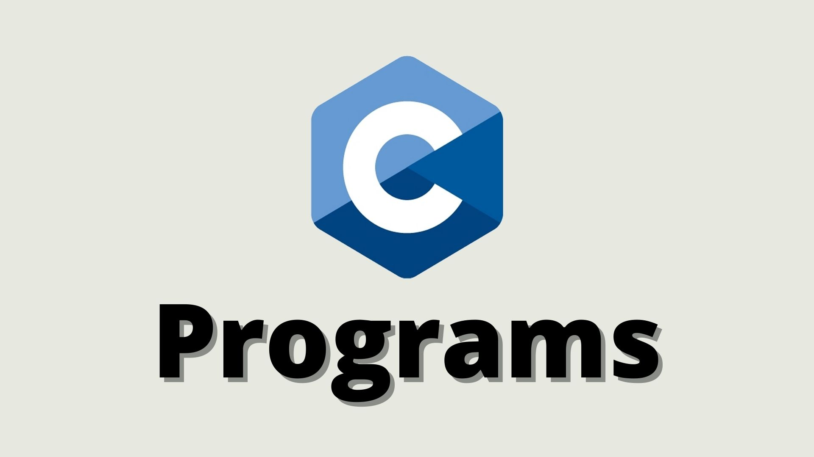
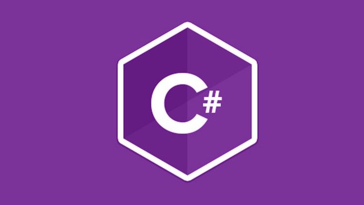

General-purpose programming language
C
C was created in the 1970s by Dennis Ritchie, and remains very widely used and influential. By design, C's features cleanly reflect the capabilities of the targeted CPUs. It has found lasting use in operating systems, device drivers, protocol stacks, though decreasingly for application software, and is common in computer architectures that range from the largest supercomputers to the smallest microcontrollers and embedded systems.
A successor to the programming language B, C was originally developed at Bell Labs by Dennis Ritchie between 1972 and 1973 to construct utilities running on Unix. It was applied to re-implementing the kernel of the Unix operating system. During the 1980s, C gradually gained popularity. It has become one of the most widely used programming languages, with C compilers available for almost all modern computer architectures and operating systems. C has been standardized by ANSI since 1989 (ANSI C) and by the International Organization for Standardization (ISO).
C is an imperative procedural language supporting structured programming, lexical variable scope, and recursion, with a static type system. It was designed to be compiled to provide low-level access to memory and language constructs that map efficiently to machine instructions, all with minimal runtime support. Despite its low-level capabilities, the language was designed to encourage cross-platform programming. A standards-compliant C program written with portability in mind can be compiled for a wide variety of computer platforms and operating systems with few changes to its source code.
Since 2000, C has consistently ranked among the top two languages in the TIOBE index, a measure of the popularity of programming languages.

C++
C++ was created by Danish computer scientist Bjarne Stroustrup as an extension of the C programming language, or "C with Classes". The language has expanded significantly over time, and modern C++ now has object-oriented, generic, and functional features in addition to facilities for low-level memory manipulation. It is almost always implemented as a compiled language, and many vendors provide C++ compilers, including the Free Software Foundation, LLVM, Microsoft, Intel, Oracle, and IBM, so it is available on many platforms.
C++ was designed with an orientation toward systems programming and embedded, resource-constrained software and large systems, with performance, efficiency, and flexibility of use as its design highlights. C++ has also been found useful in many other contexts, with key strengths being software infrastructure and resource-constrained applications,[11] including desktop applications, video games, servers (e.g. e-commerce, web search, or databases), and performance-critical applications (e.g. telephone switches or space probes).
C++ is standardized by the International Organization for Standardization (ISO), with the latest standard version ratified and published by ISO in December 2020 as ISO/IEC 14882:2020 (informally known as C++20). The C++ programming language was initially standardized in 1998 as ISO/IEC 14882:1998, which was then amended by the C++03, C++11, C++14, and C++17 standards. The current C++20 standard supersedes these with new features and an enlarged standard library. Before the initial standardization in 1998, C++ was developed by Stroustrup at Bell Labs since 1979 as an extension of the C language; he wanted an efficient and flexible language similar to C that also provided high-level features for program organization. Since 2012, C++ has been on a three-year release schedule with C++23 as the next planned standard
C#
C# is a multi-paradigm programming language. C# encompasses static typing, strong typing, lexically scoped, imperative, declarative, functional, generic, object-oriented (class-based), and component-oriented programming disciplines.
The C# programming language was designed by Anders Hejlsberg from Microsoft in 2000 and was later approved as an international standard by Ecma (ECMA-334) in 2002 and ISO/IEC (ISO/IEC 23270) in 2003. Microsoft introduced C# along with .NET Framework and Visual Studio, both of which were closed-source. At the time, Microsoft had no open-source products. Four years later, in 2004, a free and open-source project called Mono began, providing a cross-platform compiler and runtime environment for the C# programming language. A decade later, Microsoft released Visual Studio Code (code editor), Roslyn (compiler), and the unified .NET platform (software framework), all of which support C# and are free, open-source, and cross-platform. Mono also joined Microsoft but was not merged into .NET.
As of 2021, the most recent version of the language is C# 10.0, which was released in 2021 in .NET 6.0.